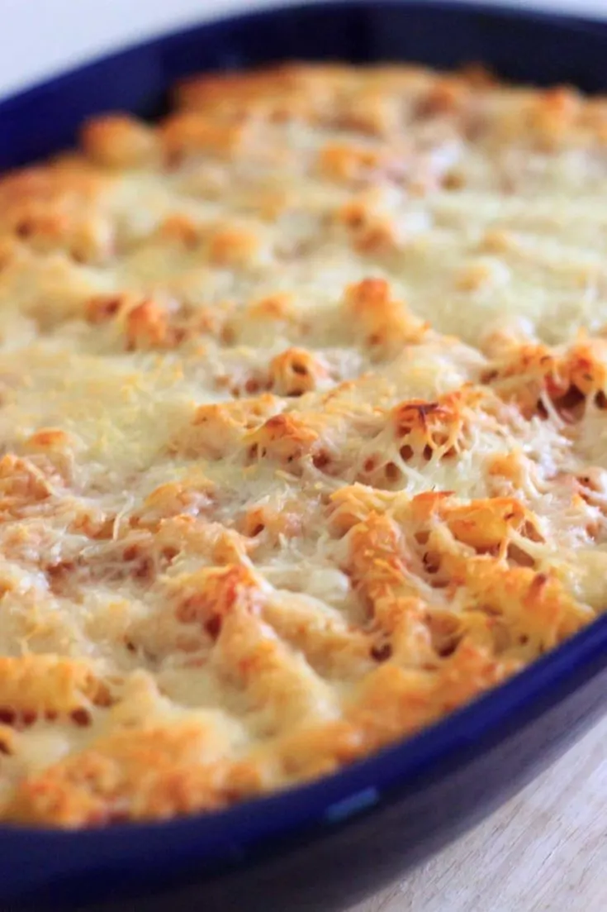

Baked Ziti

Description
A heartwarming dish comprised of perfectly-cooked pasta, savory tomato sauce and creamy ricotta.
Ingredients
- 1 (16 oz) box of ziti
- 1 (24 oz) jar of marinara sauce
- 1 (15 ounce) container of ricotta cheese
- 3 eggs
- 2 (28 oz) bags shredded mozzarella cheese
Instructions
- Preheat oven to 350ºF.
- Boil/cook ziti according to package instructions.
- In a medium bowl, mix ricotta cheese, eggs and 1 package of the shredded cheese. Set aside.
- In a casserole dish (I use a 14x10 " dish, or you can use 2 8x8 " dishes), spoon a small amount of sauce to slightly cover bottom of dish.
- Spoon in half of ziti, then evenly spread the ricotta cheese mixture on top. Pour more sauce over ricotta cheese (saving about 1 cup of sauce for final layer).
- Add the rest of the ziti, and layer remaining 1 cup sauce over it. Sprinkle the other package of mozzarella cheese on top.
- Bake for 45 minutes or until cheese is lightly browned.